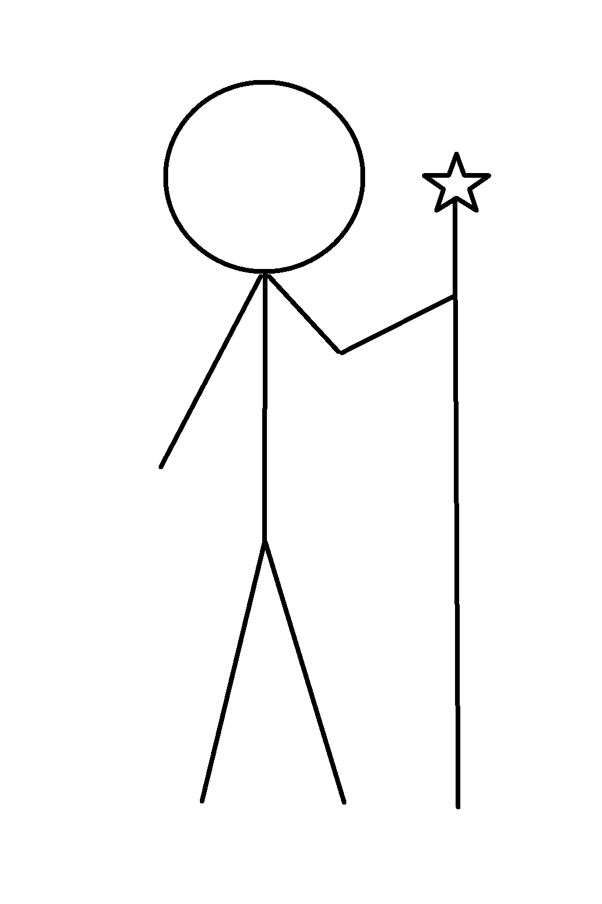
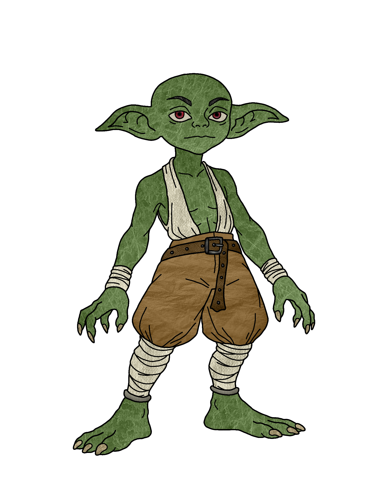
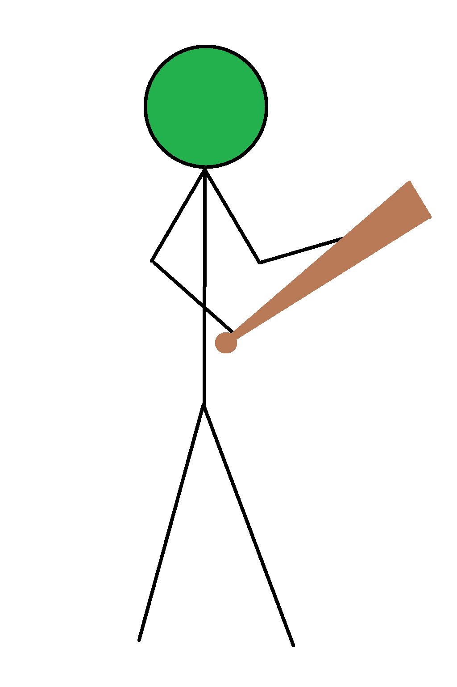
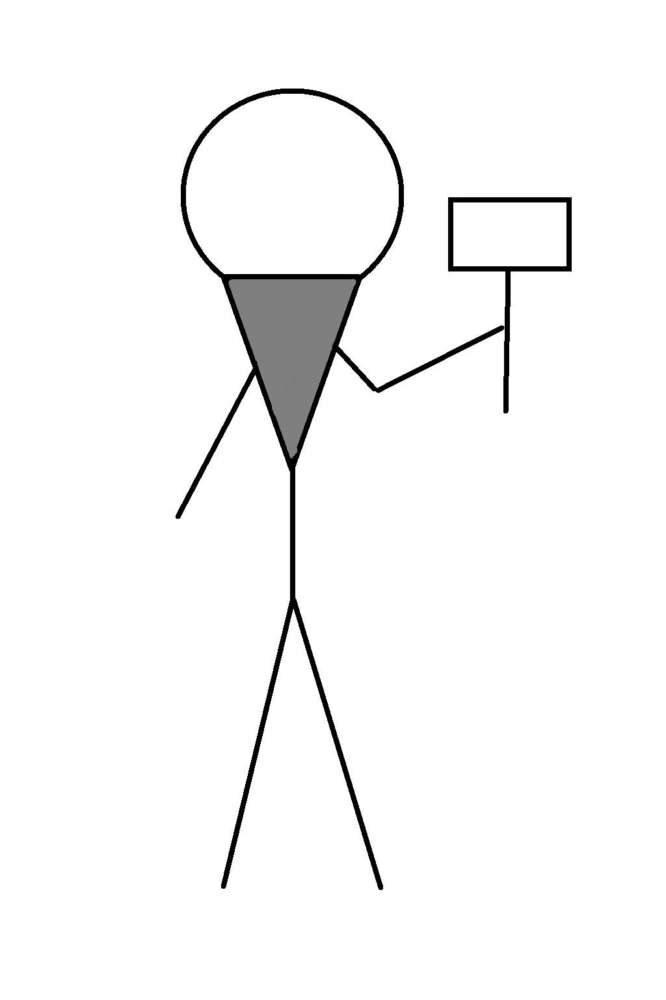
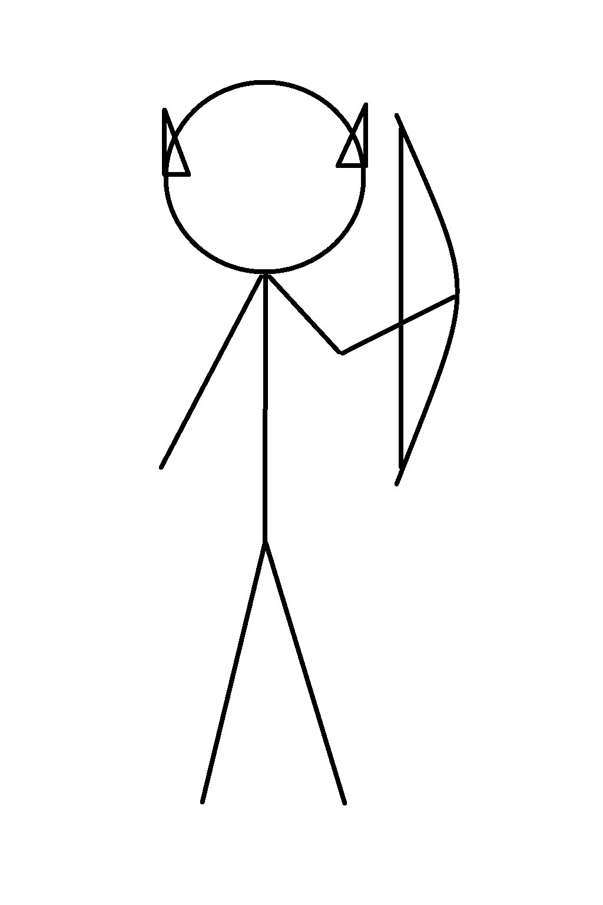
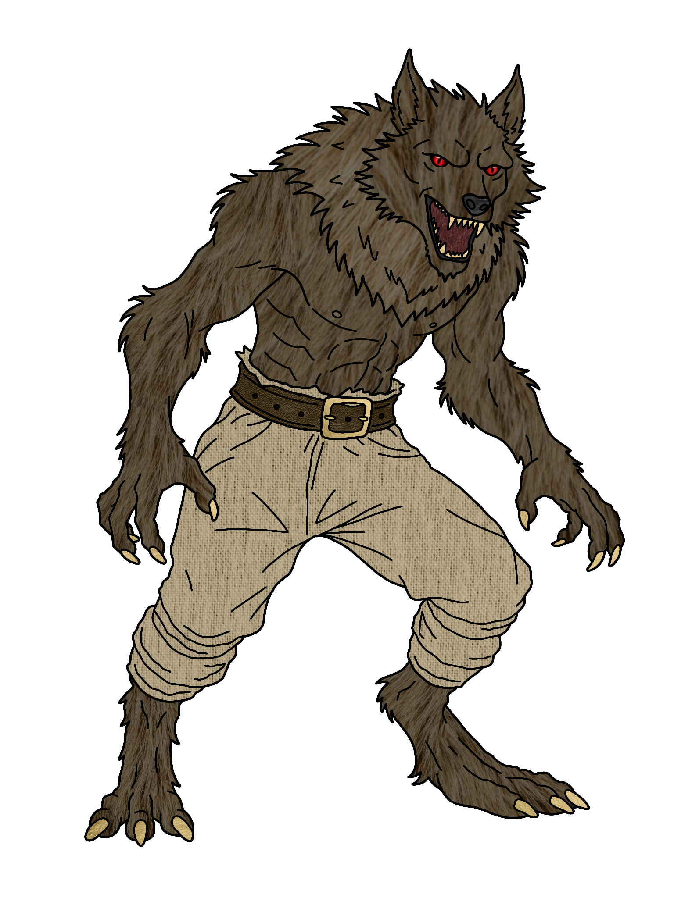
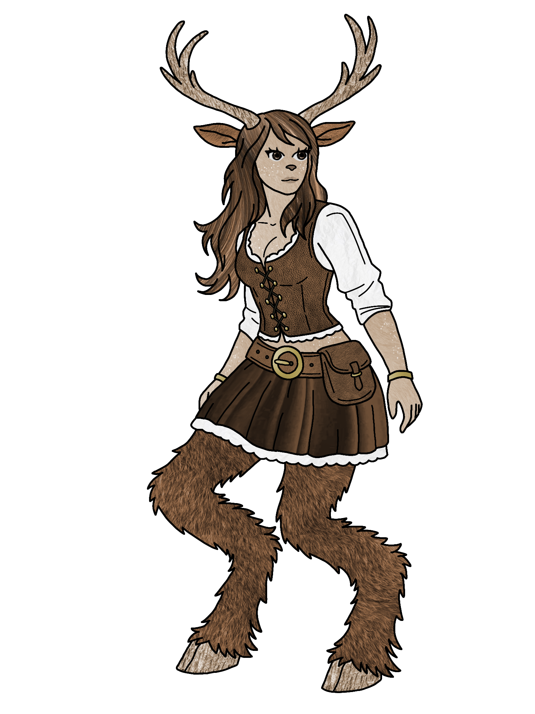

Liste des races disponibles
Humains
Les humains sont connus pour leur grande capacité d’adaptation, mais aussi pour leur cruauté, aussi bien sur le champ de bataille qu’en tant qu’individus. Leur espérance de vie varie de 60 à 100 ans.
Points de vie : 4
- Immunité mineure aux désarmements
- Bonus d’armure +1 (par set porté en pair)
Traits spécifiques : Aucun
Voir l'historique
Image temporaire — générée par IA
Gobelins
Les goblins sont perçus comme de vils voleurs, petits, faibles et souvent en groupe pour semer le chaos. Malgré leur apparence misérable, ils sont rusés et peuvent rapidement devenir une menace si sous-estimés.
Points de vie : 3
- Rapaces : +2 à chaque récolte ou butin (Géo)
- Maîtrise des armes de jet : +2 dégâts par lancer
- Agilité : 1 esquive gratuite contre une attaque physique (Par combat)
- Évolution : Peut devenir un Haut Gobelin, débloquant la classe Shaman et +2 PV permanent (Voir animation)
Traits spécifiques :
- Masque de Gobelin (ou maquillage vert)
- Nez pointu / écrasé (pas obligatoire si vous portez un masque)
- Maquillage vert sur toutes les parties visibles du corps (cou, mains, etc.)

Orcs
Les Orcs sont des colosses brutaux qui ne reculent jamais devant un combat. Ils règlent leurs conflits par des duels honorables, cherchant toujours à asseoir leur dominance.
Points de vie : 7
- Coup puissant : +2 dégâts, 1 coup par court repos (15 mins)
- Intimidation : L’orc lâche un cri de guerre ; empêche un ennemi de vous attaquer pendant 3 minutes (1 fois par court repos)
Traits spécifiques : Masque d’orc (ou maquillage brun / vert / autres teintes) sur toutes les parties visibles du corps
Voir l’historique
Image temporaire — générée par IA
Nains
Petits mais costauds, les nains sont d’excellents artisans et travailleurs acharnés. Ils sont réputés pour leur ingéniosité, leur bravoure et leur amour de la bière.
Points de vie : 6
- Mains enflammées : Réduit de moitié le temps de forge et minage
- Stabilité : Résistance mineure aux chutes et secousses
Traits spécifiques : Barbe imposante (pour tous les genres)
Voir l'historique
Image temporaire — générée par IA
Drakéides (Drakes)
Autrefois dragons, les Drakéides ont abandonné leur forme originelle pour adopter une apparence humanoïde, poursuivant ainsi sagesse et prospérité.
Points de vie : 5
- Armure naturelle : +2 PV temporaires (se régénère à chaque scène)
- Souffle élémentaire : Attaque élémentaire selon la lignée du Drake (1x par combat)
- Feu (Rouge / Orange) : 2 dégâts de feu
- Acide (Vert) : 1 dégât perce-armure
- Électricité (Bleu) : 2 dégâts électriques (+1 si la cible porte une armure métallique)
- Glace (Blanc) : soigne +2 PV avec catalyseur / touché (1 fois par scène)
- Résistance mineure à leur propre élément
Traits spécifiques : Masque ou maquillage de dragon, traits de dragon (ailes, queue, griffes)
Voir l'historique
Image temporaire — générée par IA
Aïsha
Les Aïsha sont une espèce aquatique séduisante. Elles ont la peau écailleuse de couleur distincte. Certaines ont des branchies visibles et d’autres des oreilles palmées et autres caractéristiques aquatiques.
Points de vie : 2 PV de jour et 6 PV de nuit
- Cri des Aïsha : Étourdit pendant 10 secondes jusqu’à 3 cibles (1 fois par heure)
- Séduction mineure : Charme 1 cible pendant 15 mins (1 fois par jour)
- Adaptation à la pluie : 6 PV maximum jour et nuit en temps de pluie
Traits spécifiques : Branchies, teintes de peau grise, bleue, noire, traits aquatiques (doigts/oreilles palmés, etc.)
Voir l'historique
Image temporaire — générée par IA
Elfes de l’Arbre Monde
Les elfes de l’Arbre Monde sont en harmonie avec la nature et manient la magie avec une aisance incomparable.
Points de vie : 5
- Magie Elfique : +2 mana ou ferveur de base
- Bouclier spirituel : +3 armure temporaire pendant 1h (-2 mana ou ferveur pendant ce temps, se recharge après court repos)
Traits spécifiques : Oreilles d’Elfe, vêtements nobles et/ou elfiques
Voir l’historique
Image temporaire — générée par IA
Elfes des Ténèbres
Séparés de leurs cousins de l’Arbre Monde, ces elfes se sont adaptés aux bois obscurs, développant une méfiance et un narcissisme prononcés.
Points de vie : 5
- Évasion nocturne : +2 esquives la nuit seulement (1x par heure)
- Magie Elfique ténébreuse : +1 mana ou ferveur maximum
Traits spécifiques : Visage blanc et cernes noirs, vêtements sombres
Voir l'historique
Image temporaire — générée par IA
Demi-Elfes
Les enfants d’une union entre Humain et Elfe, possédant des traits des deux races.
Points de vie : 6
- Sang elfique : +1 mana ou ferveur maximum
- Bonus d’armure +1 (par set porté en pair)
Traits spécifiques : Oreilles d’Elfes (optionnel), vêtements humains ou nobles
Voir l’historique
Image temporaire — générée par IA
Loups-Garous
Des êtres maudits alternant entre forme humaine et bête sanguinaire.
Points de vie : 4 / 6 (forme lycanthrope)
- Faiblesse à l’argent : dégâts subis x2 si arme en argent
- Forme lycanthrope : Le personnage se transforme en loup sanguinaire, perd tout contrôle / raison (Voir compétence Rage). Dans cette forme, il lui est impossible de parler ou d'utiliser ses compétences, ses sorts et ses pouvoirs. La transformation dure 1h (minimum) ou jusqu'à ce qu'il tombe dans le coma ou meurt. D'autres moyens existent pour la contrôler ou la prévenir, mais sont à découvrir en jeu.
- Régénération : +2 PV toutes les 15 minutes en forme lycanthrope
Traits spécifiques : Forme humaine : Aucun. Forme de loup : fourrure/griffes ou masque de loup
Voir l'historique
Image temporaire — générée par IA
Hybrides
Humanoïde mélangé avec une autre race (Animaux, créatures, plantes). Choisissez une seule spécialisation.
Points de vie : Selon la spécialisation
Spécialisations :
- Combattant (3 PV) : Pied Forestier, Coup précis I (+1 dégât, 1x par court repos)
- Support (4 PV) : Nature Sauvage (+3 PV temporaire par long repos), Soins improvisés (+1 PV après 5 min avec un pansement fait en feuilles d'arbre)
- Défenseur (7 PV) : Posture lourde : Ancrage (Voir Maître du bouclier), Résistance à Brise-Bouclier (1x court repos)
Traits spécifiques : Selon la spécialisation (forme animale, végétale, etc.)
Voir l'historique